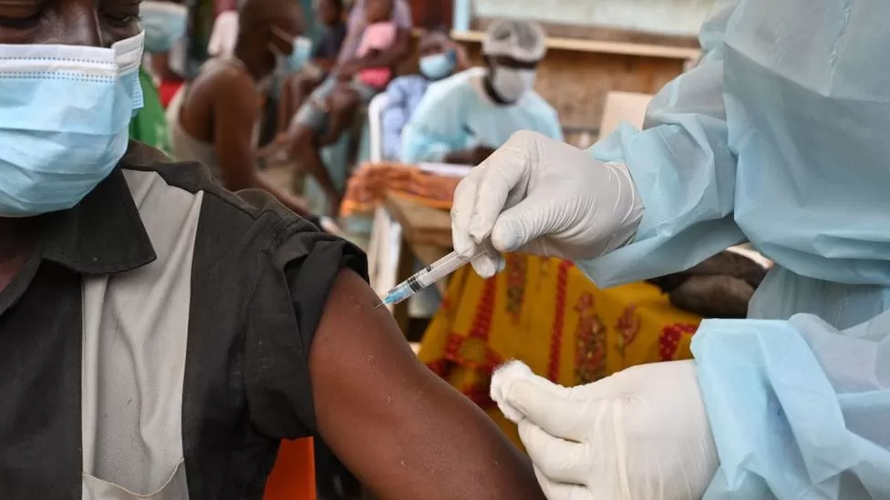

Uganda's latest Ebola outbreak is over, WHO and officials say
Uganda had recorded 142 cases including 56 deaths since the outbreak was announced in September

'I'm scared to give it to my kids': Baltimore's water issues are symptoms of a growing national problem
The federal government has “waited too long” to invest in water infrastructure, EPA chief Michael Regan told NBC News in an interview.
With new China travel restriction in place, Asian Americans urge nuanced caution
“What I would ask everyone to do is, again, be careful not to conflate the virus with an ethnicity or a group of people,” said John C. Yang, executive director of Asian Americans Advancing Justice | AAJC.
A new Alzheimer's drug will cost $26,500 a year. Who will be able to get it?
For Medicare to pay for the drug, patients have to be enrolled in a clinical trial, which will limit coverage.
New guidelines for treating childhood obesity include medications and surgery for first
The American Academy of Pediatrics updated its recommendations on childhood obesity for the first time in 15 years.
Global Scientific Journals - Call for Research Papers 2023
Global Scientific Journals (GSJ) is a peer-reviewed open access journal organization & research platform that meets high quality standards by exercising peer review and editorial quality control. GSJ encourages open access and universally accessible online journal. GSJ covers the publication of research articles from all areas of science, art, management and technology.
All original research papers published by GSJ are made freely accessible online with full text immediately upon publication. Authors publishing with GSJ retain the copyright to their work but only transferring the publication rights to GSJ which allows article to be published and cited without any restriction. All published research papers are indexed and archived in different open and paid platforms
10 Reputable Medical Journals to Subscribe To
There’s tons of information about healthcare and medicine floating around out there, but can you actually trust it? If you want to make sure your opinions and decisions are well-informed and based on accurate information, reading one or more of these peer-reviewed medical journals on a regular basis can help
The New England Journal of Medicine
One of the top “high-impact” journals in the field, the New England Journal of Medicine is highly influential and widely cited by medical professionals and other scientists in their research. It’s published by the Massachusetts Medical Society and has been in print since 1812
The Lancet
Published by Elsevier and originating from London, England, The Lancet is one of the world’s top medical journals with notably high impact. Like other influential journals, The Lancet publishes several spin-off journals focused on specific subjects, many of which are also frequently cited by professionals
What is Ebola and why is Uganda's outbreak so serious?
Health workers are at risk from treating Ebola patients
An outbreak of Ebola in Uganda is proving more difficult to deal with than more recent epidemics, with its recent spread to the capital city, Kampala, causing particular concern.
So far 75 cases have been confirmed in four provinces, though it is feared that there could be many more which were not detected before the victims were
What is Ebola?
It is a deadly virus with initial symptoms which can include a sudden fever, intense weakness, muscle pain and a sore throat Subsequent stages can include vomiting, diarrhoea and - in some cases - both internal and external bleeding, known as haemorrhaging The incubation period can last from two days to three weeks. Symptoms of Ebola can sometimes be confused with other illnesses such as malaria and typhoid.
Why is this outbreak so serious?
The virus has been circulating in rural parts of Uganda since September but an outbreak in an urban area - like Kampala - is much more complex to deal with. The population density and ease of mobility, including internationally, means the virus can easily travel througha infected but asymptomatic patient within a short period of time.
However an asymptomatic person cannot transmit the virus. Speed is of the essence when tracing contacts of known cases, isolating and monitoring them for at least the 21-day incubation period of the virus. The cooperation of such contacts with response teams is also crucial. The infection in Kampala has been traced to a contact of a confirmed case who reportedly travelled to the capital under a disguised identity
Seven members of one family he had come into contact with got infected. Ebola spreads between humans by direct contact with bodily fluids and contaminated items or environments. Funerals can be a particular risk if mourners have direct contact with the body
Is there a vaccine?
Another concern is that this is the Sudan strain of Ebola, for which there is no approved vaccine, unlike the more common Zaire strain. The Health Ministry has said three candidate vaccines from Oxford, Sabin and Merck will be trialled for efficacy "in coming weeks". Several treatment options are also being tested, said Health Minister Jane Ruth Aceng.
